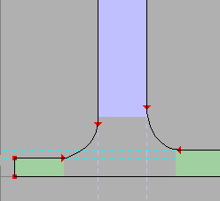
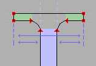
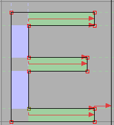
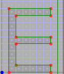
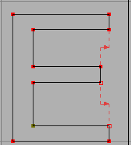
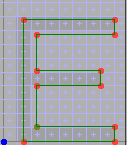
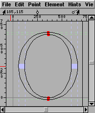

ヒントづけ
PostScript では元来、ヒント同士が重なり合わない必要がありました。現在では、有効なヒントのセットには常に重なり合うものが無い必要がありますが、グリフ内を移動しながらセットを変更することができます。
そのため、ヒント置換を伴うヒントづけ処理を実装するためには、FontForge はヒントづけを行なうステムの位置と幅を知るだけでなく、どこで有効化するかを知る必要があります。また、どのステムが他のステムと重なり合うかも知る必要があります。
 水平ステムは明るい緑で表示されています。垂直ステムは明るい青で表示されています。ステムが有効化されている領域は長方形として塗りつぶされ、その領域の外側では、ステムのアウトラインは点線で描かれています。これらのステムのほとんどは他のステムと衝突しませんが、2 つだけ、いちばん下の 2 個の水平ステムは互いに衝突し合っています。他と重なり合わないステムヒントはすべて同時に有効化することができますが、2 個の衝突ステムヒントのうち、有効化できるのは片方だけです。FontForge がグリフを出力するときには、各点でどのステムが有効化する必要があるかを判断して、必要なものを有効化します。
水平ステムは明るい緑で表示されています。垂直ステムは明るい青で表示されています。ステムが有効化されている領域は長方形として塗りつぶされ、その領域の外側では、ステムのアウトラインは点線で描かれています。これらのステムのほとんどは他のステムと衝突しませんが、2 つだけ、いちばん下の 2 個の水平ステムは互いに衝突し合っています。他と重なり合わないステムヒントはすべて同時に有効化することができますが、2 個の衝突ステムヒントのうち、有効化できるのは片方だけです。FontForge がグリフを出力するときには、各点でどのステムが有効化する必要があるかを判断して、必要なものを有効化します。
現在の PostScript の仕様により、FontForge は相対カウンタサイズを制御することができます。カウンタとは、隣接するステムの間の空間のことです。左の例では、偏を構成する水平ステムの間に、サイズの等しい 2 個のカウンタが存在し、旁の側には 3 個の均等なステムが存在します。これらは 2 個の独立したカウンタグループを構成しており、FontForge の ヒント(I)→自動カウンタヒント(C) コマンドを実行するとそのそれぞれに対するカウンタ記述が生成されます。カウンタの大きさは、エレメント(L)→グリフ情報(I)... ダイアログの [カウンタ] ペインで直接指定することもできます。
カウンタ空間は垂直ステム間にも現れていて、この場合は FontForge は垂直ステムに対する 1 個のカウンタグループを出力します。
セリフ
 ヒント置換の大きな利点の一つは、いくつかの標準的なセリフの状態を記述することができることです。右の例では、左側に突き出たセリフは右側のセリフよりもわずかに薄くなっています。
 そうは言っても、すべての問題が解決できるわけではありません (それとも、この機能のすべての応用法を私が知らないだけかもしれません)。右側のセリフを考えてみましょう。ヒント置換を使えば、中央の垂直ステムおよびセリフに相当する短い垂直ステムに対するヒントを定義することができるでしょう。ところが、解決しなければならない問題は、セリフの左端とステムの左端の間隔を、セリフの右端とステムの右端の間隔と等しくすることです。しかしこれを行なうには、同時に活性化された重なり合うヒントが必要です。私の考えでは。
自動ヒントづけ
FontForge の 自動ヒント(H) コマンドを使うと、水平ステムヒントおよび垂直ステムヒントを算出することができます。また、ヒント置換を行なう点も (必要な場合) 発見され、アジア以外の OpenType フォントで使用可能な、単純なカウンタ記述 (これは Type1 フォントの h/vstem3 ヒントと等価です) のチェックが行なわれます。
グリフの変更を行なったときは常に、そのヒントが古くなったことが FontForge に記録されています (グリフの自動ヒントづけを行なった時、またはヒントを手で編集した時に FontForge はこのフラグを戻します)。古いヒントがついたグリフを含むデータから PostScript フォントを出力すると、FontForge は自動的にヒントを生成し直します。
この動作が余計なお世話である場合もあるでしょう。環境設定項目 HintForGen を設定すると、フォント全体でこれをオフにすることができます。ヒント(I)→自動ヒントを停止(D) コマンドで個別のグリフに対してオフにすることができます。
手動ヒントづけ
私は、FontForge の自動ヒントコマンドが手動調整を必要としないほど優秀であることを願っています。しかしこの手の願いは滅多に叶えられないものです。
自動ヒント(H) コマンドはグリフ内のすべてのステムを抽出します。そのうちの一部が不要であると判断されれば削除されます。あなたが重要だと考えるヒントを FontForge が削除しているのに気づいたときは、Shift キーを押したまま ヒント(I)→自動ヒント(H) を呼び出すと、FontForge にステムの削除を一切行わないように通知したこと名になります。その後、手動でヒントを削除するには ヒントを確認(R)... を使用してください。
自分でヒントを作成する必要があるときに、操作可能なのはヒントの位置と幅だけです。それらを指定すると、FontForge はヒントが有効化されるべき範囲の推測を自動で行ないます。
手動で行なうことができるのは以下の操作です:
- すべての水平ステムヒントを削除する
- すべての垂直ステムヒントを削除する
- 2 個の点を選択し、それらの間の水平方向の距離と等しい幅をもつ垂直ステムヒントを作成する
- 2 個の点を選択し、それらの間の垂直方向の距離と等しい幅をもつ水平ステムヒントを作成する
- 任意の y 座標から始まり、任意の幅をもつ水平ヒントを作成する
- 任意の x 座標から始まり、任意の幅をもつ垂直ヒントを作成する
- すべてのヒントを表示し、どれか (または全部) を手動で変更または削除する。
グリフのヒントに手動で変更を加えれば、グリフは「自動ヒントを停止」と印づけされ、その文字に明示的に 自動ヒント(H) コマンドを呼ばない限り
手動で以下の操作を行なうことも可能です:
- ヒントを切り替える点の設定
- グリフに対するカウンタグループの設定
これらは「自動ヒントを停止」ビットを設定しません。
手動によるヒント置換点の指定
FontForge の ヒント(I)→ヒントが置換する点(S) コマンドは、ヒント置換が起こる点を自動的に検出しますが、これが十分うまく働いていないときは、(ヒントマスクに所属させたい点 1 個だけをあらかじめ選択してあれば) エレメント(L) コマンドから手動で設定を行うことができます。
→情報を得る(I)
1 個のグリフ内にお互いに衝突するヒントが含まれている場合、グリフの最初の点 (最初の輪郭の最初の点) には、その点が所属するヒントマスクが存在しなければなりません。そうなっていない場合、FontForge はフォントを出力する時に、置換する点を自動検出します。他の点はヒントマスクに所属している必要はありません (してもかまいません)。
ヒントマスクは、その点の位置を設定するときに、どのヒントが有効化されているべきかを指定し、それ以降・新しいヒントマスクが設定されるまでのすべての点を制御します。
例えば、以下の 例では、(左の) 選択された点は、そこで有効になっている点がハイライト表示されています。グリフビューでは現在有効なステムは無効になっているステムに比べて歴然と暗い色で表示されています。
所属するヒントマスクがある点は、丸で囲って表示されています。
例では、(左の) 選択された点は、そこで有効になっている点がハイライト表示されています。グリフビューでは現在有効なステムは無効になっているステムに比べて歴然と暗い色で表示されています。
所属するヒントマスクがある点は、丸で囲って表示されています。
連続していない点を選択するときに、Control キーを押すのをお忘れなく。
手動によるカウンターのグループ化
FontForge には、カウンタグループを構成するステムを検出するための ヒント(I)→自動カウンタヒント(C) コマンドも用意されています。
この場合も、エレメント(L)→グリフ情報(I) の [カウンタ] タブを使用して、手動で設定を行うことができます。新しいカウンタグループの作成をするときには、上の例と非常によく似たダイアログが提示され、そこでは輪郭の組合せと結びつけられる一連のヒントを選択する必要があります。
ヒントと以前存在したフォント
FontForge は TrueType フォントの読み込み時には、 TrueType の命令を PostScript ヒントに変換しません (そのフォーマットは複雑すぎてあまりに多数の可能性が考えられるからです。その代わりに、FontForge はすべての TrueType 命令を保存して、解釈せずにそのまま書き戻します)。
Type1 フォントからは、グリフに存在するすべてのヒントを問題なく読み込み、ヒントが置換する点を記録しています。ただし、カウンタヒントは読み込みません。
OpenType (Type2) フォントからは、FontForge はすべてのヒントを読み込み、ヒント置換点とカウンタヒントを記録しています。
ヒントづけと TrueType
FontForge が TrueType フォントに対して行う「ヒントづけ」 (実際に命令を生成します) はまったくひどい物です。一般的に、ヒントづけしないグリフの方が FontForge によって自動ヒントづけされたグリフよりもよい結果が得られるでしょう。
TrueType フォントのヒントづけには、ずっと広い範囲の可能性が開けています。私は TrueType に固有ないくつかのタイプのヒントを追加しました (これらは PostScript 出力ルーチンでは無視されます)。これらは、TrueType の可能性を利用しきっているとはとても言えません。
-
斜行ステムヒント
これらは PostScript が理解する水平および垂直ステムヒントと似ていますが、これは同様の方法で斜めのステムの幅を制限することができます。 -
最小距離ヒント
TrueType では、2 個の特徴の間の距離が決してゼロにならないように設定することができます。各ステムヒントの間には自動的にこれが設定されますが、他の場所でもこれを設定すると役に立つことがあります。とくに、グリフの右端と横幅の線の間に最小距離ヒントを設定することにより、グリフの後に必ず空白が入るように設定することができます。また、このヒントは、先ほど言及したセリフの問題を解決することもできます。 -
グリッドへの丸め
TrueType では、グリフをラスタライズする前に、ラスタライズ時のグリッドに点を移動することができます。ステムヒントと最小距離ヒントは自動的に丸めが行われますが、丸め処理が役立つ場合は他にも存在します。
最小距離ヒントの例
|  |  完全にヒントづけられたグリフは 完全にグリッド合わせが行われて いますが、ステム間の距離の差は 失われてしまいます。 |
|  |  上の問題を解決する 試みの一つです。下と比べて みてください。 |
 |
 最小距離ヒント内の異なる命令が どのようにラスタライズ結果に 影響するかにご注意ください。 |
ヒントに関する疑問点:
ヒントづけを上手に行なうためには、ヒントに関する文書は不適切であることに気づきました。
- T1_Supp.pdf のセクション 2.4 では、垂直カウンタは左サイドベアリングからのオフセットであると言っていますが、例 2.6 ではそれらのオフセットは 0 からであると図示しています。
- Type2 で、LanguageGroup が 1 でなく、ステムが *stem3 パターンに当てはまらないときにカウンタマスクを使ってもいいのか? それとも cntrmask はラテン文字では *stem3 にしか使えないのか?
-  ヒントはどのように動作するのか? ヒントに付随する点が存在しないとき、そのヒントは有効なのか? (右の例の“O”のように、2 本の垂直ヒントがそれに伴う点をもたない場合)。
- ヒントの片方の端にしか点が存在しない場合はそれは有効なのか? 左上のセリフの頂点に対して、妥当なヒントを出力することが可能か?